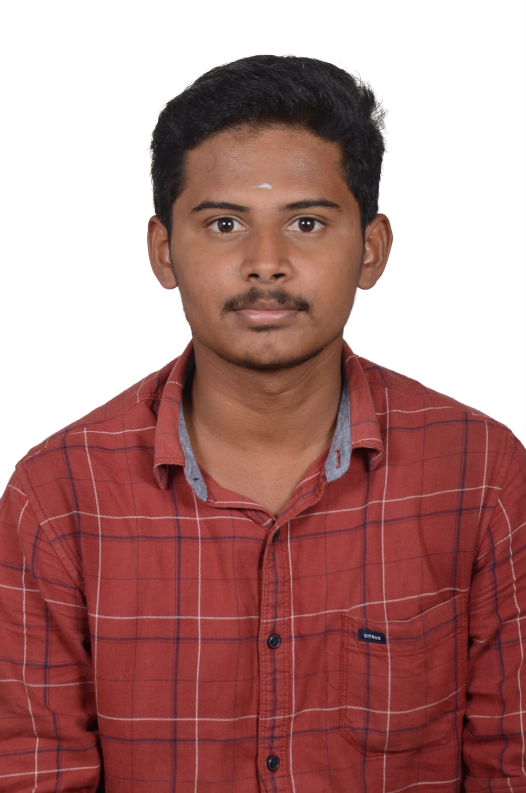

Software Testing
Manual testing · Quality checks · Debugging mindset
B.E. CSE Graduate · Coimbatore, India
I'm Sudharsan S — a Computer Science graduate interested in Data Analytics, Python and software testing,Graphic Design,UI UX.
Open to entry-level opportunities

I'm a Computer Science and Engineering graduate from PSG College of Technology, with hands-on exposure to web development, AI/ML integration and cloud technologies.
I also enjoy graphic design and UI/UX, and I'm interested in turning ideas into clear and useful user experiences.
I'm looking for an entry-level opportunity where I can learn, contribute and grow with a strong team.
Manual testing · Quality checks · Debugging mindset
Programming · Data handling · Scripting
Data cleaning · Analysis · Statistics
User interfaces · User experience · Usability
Visual design · Posters · Digital content
Built a local CLI that converts natural-language requests into executable gcloud commands using LLaMA 3 via Ollama.
A real-time mobile criminal identification system using FaceNet for facial recognition and Firebase for secure data management.
A document-based AI query system for uploading PDFs and querying study materials contextually, with raw and summarized response modes.
Open to entry-level opportunities and collaborations in design and technology.